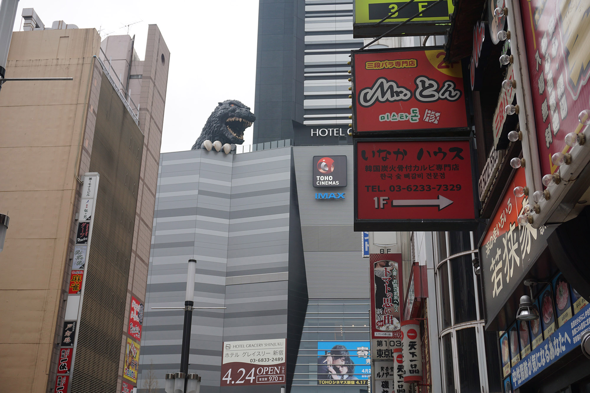

-

Gojira!
April 1, 2015:
Shinjuku, Tokyo
Of course we'd find Godzilla immediately upon arrival.
ゴジラ発見。さすが日本ですね。
-
 First meal in Japan. Hot udon with kakiage (fried vegetables) for less than $5.
First meal in Japan. Hot udon with kakiage (fried vegetables) for less than $5. -
 The lion of Shinjuku. Give him a coin and he roars for you.
The lion of Shinjuku. Give him a coin and he roars for you. -
We happened to arrive at the peak of the blossom season. It's been so long since I've seen Japanese cherry blossoms, a flood of memories came back to me.